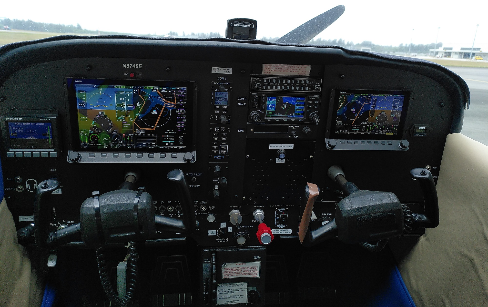
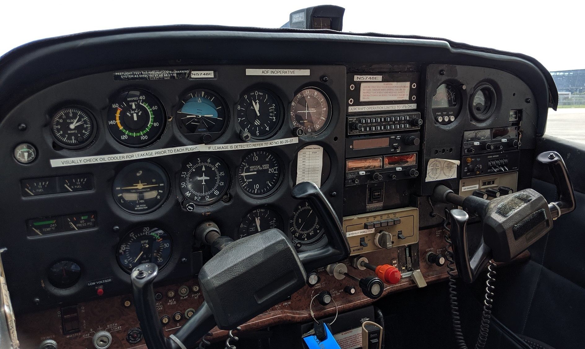
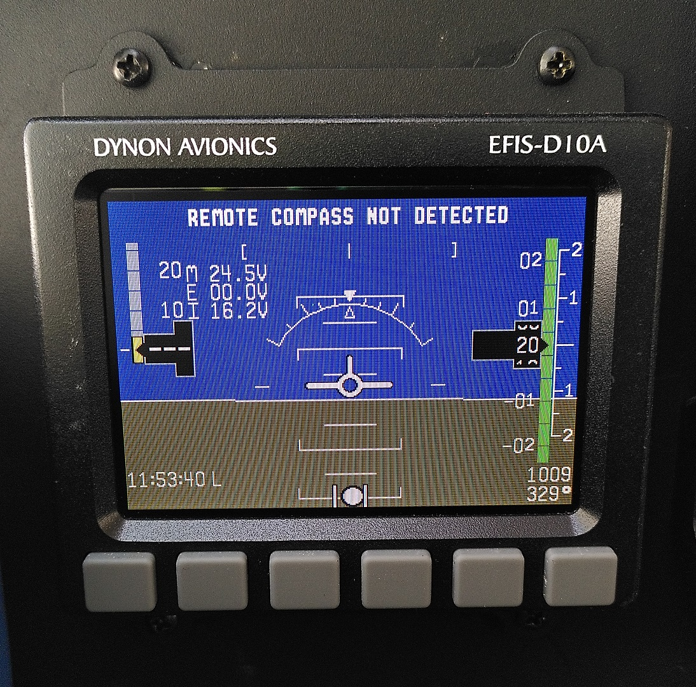
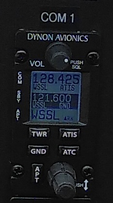
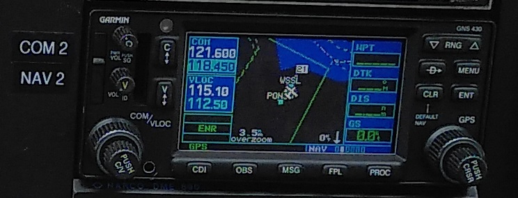
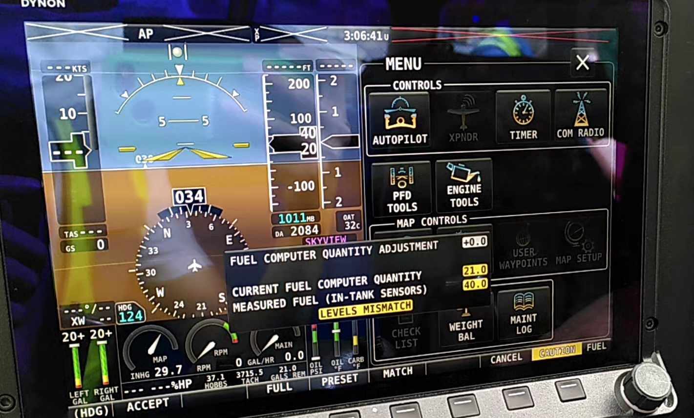
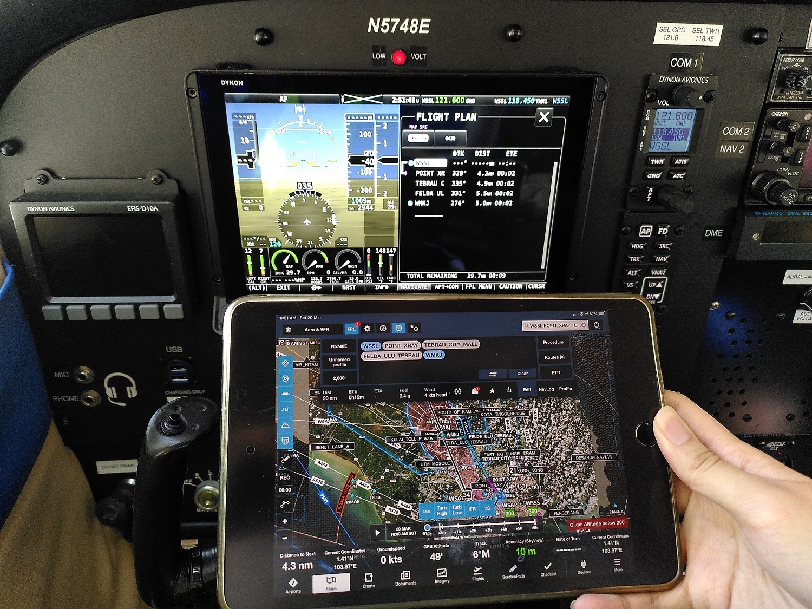
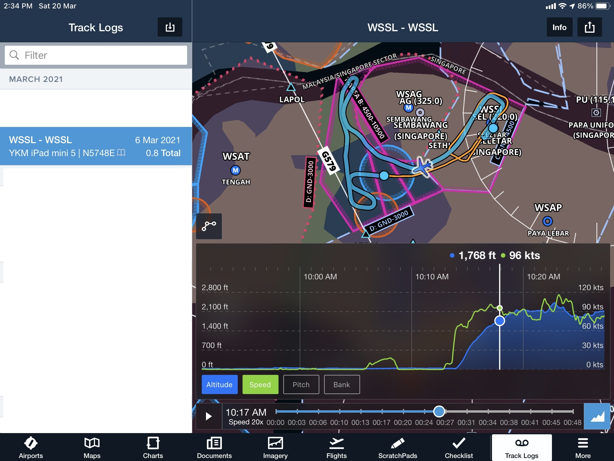
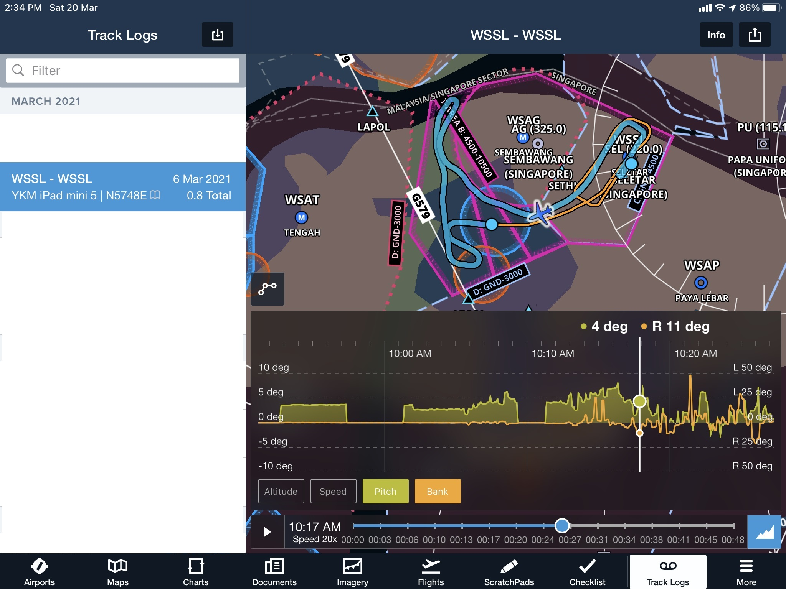
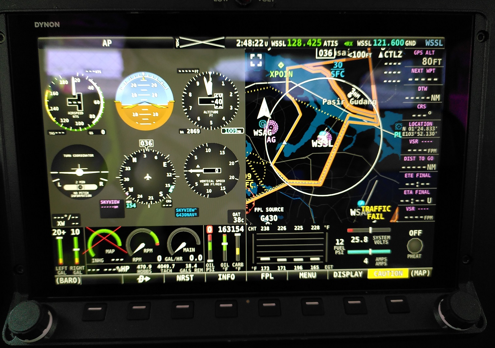

Seletar Flying Club (SFC) in collaboration with MAJ Aviation recently upgraded one of its aircraft, a Cessna 172N (N5748E) to use a glass cockpit.
As an SFC member, I had the privilege to learn about this new system and fly on this upgraded aircraft.
In this blog post, I’ll like to share my learnings when transitioning to this system. Prior to this, the aircraft I have flown including those in training have all used traditional steam-gauges.
But first, lets have some background info.
What is a glass cockpit aircraft?
I had many friends from non-aviation backgrounds ask me, isn’t the windscreen already made of glass…?
I can see why there is a misconception. The term “glass” here does not refer to the material of the windshield. It refers to the instrumentation that the pilot uses.
As Wikipedia explains, “A glass cockpit is an aircraft cockpit that features electronic (digital) flight instrument displays, typically large LCD screens, rather than the traditional style of analog dials and gauges.”
What has been upgraded?
The new system is called Dynon Skyview HDX. It is a clean-sheet replacement of all the cockpit instruments previously on this aircraft.
Basic Instruments
It has taken over all the functions of the classic 6-pack steam-gauges that the aircraft originally came with.
Clockwise from top-left:
- Airspeed Indicator (ASI)
- Attitude Indicator (AI)
- Altimeter (ALT)
- Vertical Speed Indicator (VSI)
- Heading Indicator (HI)
- Turn Coordinator (TC)
It has also replaced avionics such as but not limited to:
- Communication/Navigation radios
- Transponder
- Engine management sensors
- Fuel tank sensors
There are no more analog gauges, not even as standby.
As a backup to the Skyview, the plane is equipped with an EFIS-D10A. This tiny unit alone has all the functions of the 6-pack!
Just like the Skyview, this EFIS-D10A is also equipped with its own backup battery in case all electrical power is lost in flight. Both the Skyview’s and EFIS-D10A’s backup batteries are independent which increases instrument power redundancy.
Radios
There are 2 separate radio systems in this aircraft. The first radio is handled by the Skyview itself which I would consider to be a “smart” radio.
This new radio system has an internal database of common airport frequencies. With the fusion of the GPS data, it can suggest the nearest airports when the pilot rotates the selection knob. Quick-access buttons then allow the pilot to quickly select the Tower, Ground and ATIS frequencies instead of having to do manual frequency tuning. Of course manual tuning is always available if needed.
The previous radio Bendix King KX-155 is an extremely basic unit which has to be manually tuned by the pilot to the correct frequency. This longer manual step can take the pilot’s focus away from other tasks.
The plane now comes with Automatic Dependent Surveillance–Broadcast (ADS–B) transceiver to both broadcast the plane’s position and receive ADS-B signals from other aircraft. This improves the situational awareness of everyone as the pilot no longer has to solely rely on ATC to detect the presence of nearby ADS-B aircraft.
The GPS on the Skyview HDX is not certified for IFR use hence it alone cannot be used for Instrument Flight Rules (IFR) operations. A second GPS unit Garmin GNS-430 which is IFR-capable is therefore installed. It also acts as a second communication radio.
Although made by different manufacturers, the Skyview has the capability to interface with the GNS-430 to rely on its more-precise GPS data to display to the pilot for IFR operations like glideslope tracking.
Before-after comparison of basic instrument operation
Previous steam gauges
Here is a video of one of my last flights on N5748E in its former steam gauge configuration.
I cranked the engine at 07:46. After engine start, the engine-driven vacuum pumps start to kick in. We can see this effect when the Attitude Indicator and Heading Indicator start to wobble then settle down.
Current glass cockpit
Compare to the glass cockpit system below which has to booted up before engine start in order to view the engine parameters.
I started the Skyview HDX at the 2:10 mark.
Training
SFC requires pilots to have a few hours of training time with an instructor before one is signed off to fly as Pilot-in-Command (PIC).
For my glass-cockpit training, I had highly-qualified flight instructor Saleeh teaching me how to use this system.
Initial Fuel computer value confirmation
Upon a cold-boot of the Skyview, this window may show up:
This is to reconfirm the fuel computer’s assumption and fuel sender’s measurement values. These values have to correlate with the pilot’s physical inspection of the fuel tanks with a dipstick.
The fuel senders are more well-calibrated and are in theory much better than the dipstick. However any significant deviations between the two could indicate a problem with the fuel sender and alert the pilot to a possible sensor malfunction.
Weight and balance (W&B)
Weight and balance data is an important computation that the PIC has to do to ensure the aircraft is not overloaded or the positional loads of passengers/cargo on the aircraft does not adversely affect the centre of gravity.
The Skyview has a handy W&B calculator available in the system to compute W&B based on the latest fuel load entered previously as well as the passenger weight data.
Here Saleeh is teaching me how to use this calculator.
Before this, W&B has to be computed manually with spreadsheets before the flight which may be not be fully precise especially with assumed fuel load amounts and passenger quantities.
Autopilot
The aircraft is installed with a 2-axis autopilot. Dynon servos meant for the autopilot have to be installed. They are connected to the same control cables used by the pilot control yoke to move the external flight surfaces.
In an emergency if the autopilot does not want to disengage or servo motor failure, it’s possible for the pilot to yank at the controls hard enough and break the servos which are designed to fail at a certain overriding force.
Here in this video of my training, I tried the autopilot for the first time in my life!
- 26:14 - Saleeh engages the Autopilot and flying without hands! I have to select heading first.
- 28:30 - This autopilot does not have rudder control so have to press rudder to keep the * aircraft coordinated.
- 34:35 - Learning how to climb altitude with autopilot on VS mode
- 37:43 - Learning how to descend with autopilot on IAS mode. Always set heading first!
The full potential of the autopilot can only be realised when one is flying longer-distance cross-country flights instead of just in the local training area.
Can’t wait to try this out once Covid restrictions are lifted!
Foreflight Integration
Foreflight is an extremely popular iOS application that many pilots use to plan, log and track their flights.
The Skyview has the ability to synchronise information with Foreflight via Wifi.
As example is the flight plan uploading. Waypoints of the entire route can be created on Foreflight and then uploaded into Skyview so the pilot or autopilot can more easily follow the projected route. It is still technically doable for the pilot to manually enter in the waypoints through the touch-screen display but that is more time consuming.
I record my flight route quite frequently on Foreflight. Without external assistance, Foreflight can only rely on the iPad’s internal GPS hardware which is not that precise relative to a dedicated aircraft GPS unit.
With this Foreflight integration, more accurate aircraft telemetry data can be automatically pushed to my iPad. In this case, I have Altitude and Ground speed data.
Pitch and Bank data is also transmitted which is otherwise unobtainable from an iPad’s internal GPS.
Virtual steam gauges
For the purposes of flight training, the display can be set to mimic traditional steam gauges.
Primary display showing the virtual steam gauges on one half of the screen. The gauges can be set to fully occupy the entire screen as shown in the video below.
Why the expensive upgrade?
Several pilot friends from other clubs and external parties actually asked the above questions.
As they say, “nothing in aviation is cheap”. Just Googling will tell you that the Dynon glass cockpit solution costs in the multi-5-figures and that does not even count the labour cost of installation.
However, upgrade price alone is not a sole factor. Value, ease and cost of long-term maintenance factors have to be considered.
The plane N5748E is already more than 40 years old. The analog steam gauges of before are ageing rapidly thus requiring more regular and costly maintenance. Year on year, working replacement parts are also harder to come by. For example, the Bendix KX-155 radio which I did a teardown before, is no longer being manufactured!
There is also a safety element of glass-cockpit with the more robust instrumentation, extra automation and increased situational awareness it gives to the pilot.
For example, an engine failure will also disable the engine-driven vacuum pumps which drives the Attitude Indicator and Heading Indicator compounding the problems faced by the pilot. If the same emergency happens on the Skyview HDX, it will just revert to backup batteries.
A nifty feature is the automatic transponder switching to Mode-C (Alt) after takeoff instead of having to make this manual adjustment.
Skyview HDX also offers one of the best price-feature ratios when compared to other glass-cockpit upgrades in this class for aging GA planes.
Final thoughts
I especially like the features that this Skyview HDX provides. I say that not because I’m a club member but because I genuinely see the benefits of flying such an aircraft. In view of the easier future maintenance, GA aircraft operators do have to move on with the times.
So is it glass or steam gauges? Today I would pick glass if one is available at a reasonable rental rate but I won’t discount an aircraft just because it uses steam gauges. In fact many GA aircraft still use steam gauges so it’s still beneficial to have skills in both.


{kind=link}
{kind=link}
{kind=link}
{kind=link}
{kind=link}
{kind=link}
{kind=link}
{kind=link}
{kind=link}
{kind=link}
{kind=link}
{kind=link}